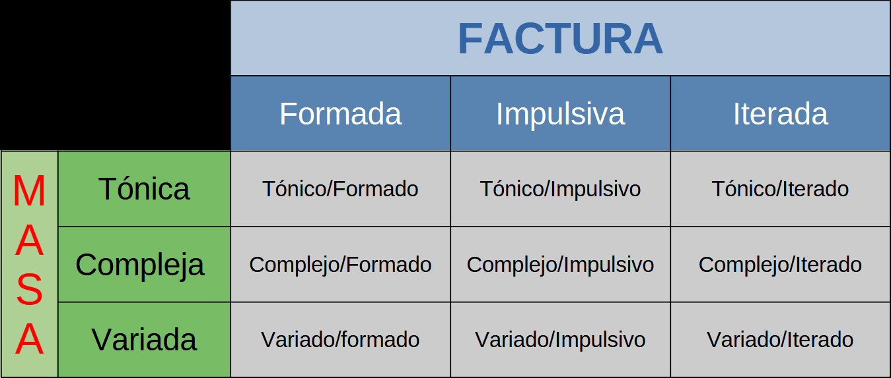

MÚSICA CONCRETA
- Synphonie pour un homme seul (1950, primer obra de música concreta)
- Transposition (1952, basada en sonidos de piano)
- Reverberation (1952, basada en sonidos de piano)
MÚSICA ELECTRÓNICA
- Study I (1953)
- Study II (1954)
MÚSICA ELECTROACÚSTICA
- La maga o el angel de la noche (1989)
MÚSICA MIXTA
- Escenas nocturnas.
1. Desde el infierno (Londres, Whitechapel, 1888 D. C.)
2. El Cielo en la Tierra (Belén, Judéa, 5 A.C.)
MÚSICA CON PROCESOS EN TIEMPO REAL
- One Fase of the Glurick Planet.
Ver Partitura
Schaeffer cataloga al sonido para poder hacer construcciones sonoras con una relación par par, esto es, que alguna característica del sonido sea común para una construcción sonora coherente y más dinámica
El cataloga tres tipos de Masa (espectro sonoro) y tres tipos de Factura (envolvente dinámica):
Veamos un cuadro de doble entrada donde se puede convinar la masa y la factura, si un sonido comparte algún tipo de masa o algún tipo de factura, ellos tienen un parentesco y son más afines al momento de realizar una construcción sonora.
